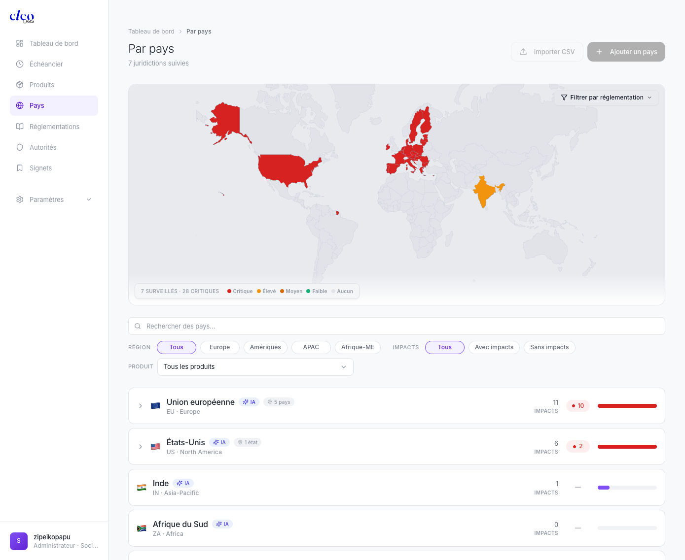
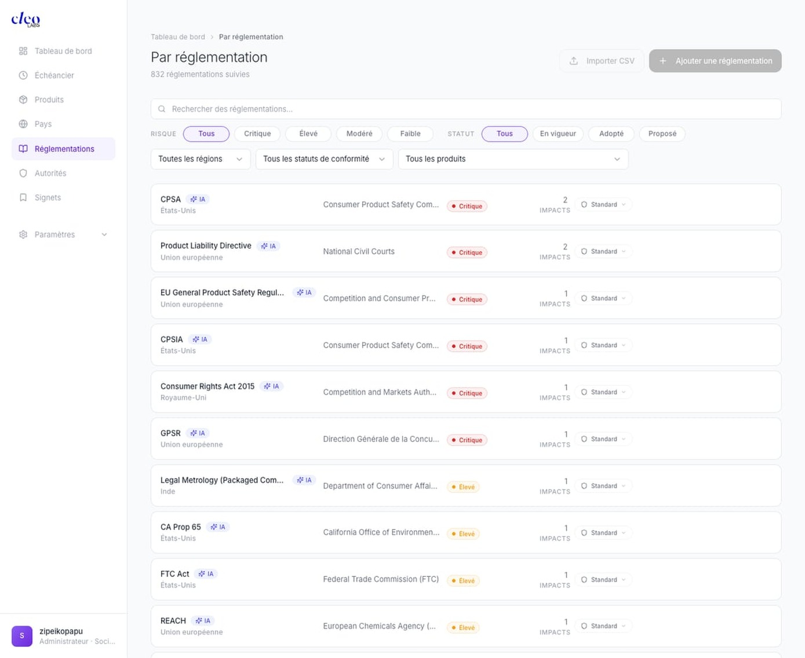
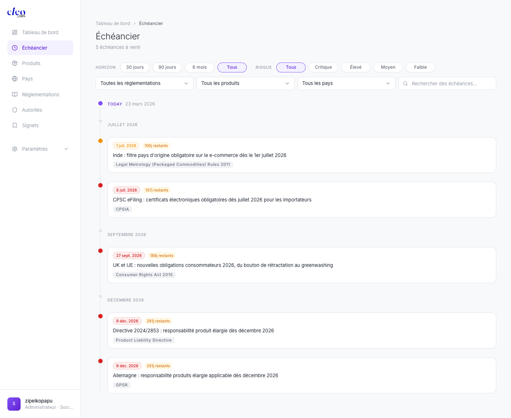
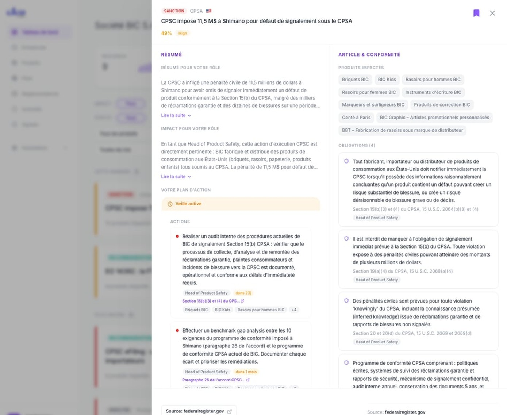

Lancer la visite interactive →
Ajouter un produit
C'est la toute première chose à faire dans Cleo. Votre catalogue produit détermine quels signaux réglementaires vous concernent. Plus vos produits sont précis, plus les alertes sont pertinentes.

Ouvrez la page Produits
Lisez votre catalogue
• Impacts — Combien de signaux réglementaires actifs concernent ce produit
• Barre de risque — Plus elle est remplie et rouge, plus le produit est exposé
Les produits les plus exposés remontent automatiquement en haut.
Cliquez sur "+ Ajouter un produit"
L'IA enrichit automatiquement
🤖 Détecte la catégorie (Textile, Chaussures, Électronique…)
📜 Identifie les réglementations applicables (REACH, ESPR, GPSR…)
🌍 Croise avec vos marchés surveillés
⚠️ Calcule le niveau de risque initial
Le badge violet "IA" confirme l'enrichissement automatique.
Import en masse via CSV
Vérifiez le résultat
Ajouter un pays
Cleo a besoin de savoir dans quels pays vous vendez pour surveiller les bonnes réglementations. Chaque pays ajouté est croisé avec vos produits.

Ouvrez la page Pays
La carte mondiale
🔴 Rouge = exposition critique
🟠 Orange = élevée
⚪ Gris = pas encore surveillé
Légende en bas : nombre de pays surveillés et nombre d'impacts critiques.
Cliquez sur "+ Ajouter un pays"
Import en masse
La liste des juridictions
🏳️ Drapeau + nom + région (Europe, Amériques, APAC…)
📊 Nombre d'IMPACTS
🔴 Points critiques (badge rouge)
📈 Barre d'exposition
📂 Sous-juridictions dépliables (pays UE, états US)
🤖 Badge IA
Les filtres géographiques
IMPACTS — Tous / Avec impacts / Sans impacts
PRODUIT — Filtrer par produit spécifique
+ Barre de recherche
Ajouter une réglementation
Cleo surveille déjà 832 réglementations automatiquement. Vous pouvez en ajouter si une loi spécifique manque, et ajuster la priorité de surveillance.

Ouvrez la page Réglementations
832 lois surveillées
📜 Nom — CPSA, REACH, GPSR, ESPR, AGEC…
🏛️ Autorité — Qui l'applique
⚠️ Risque — Critique / Élevé / Modéré / Faible
📊 Impacts — Nombre de signaux détectés
🎯 Priorité — Standard / Renforcée / Réduite
Cliquez sur "+ Ajouter une réglementation"
Niveau de risque
| Niveau | Signification |
|---|---|
| Critique | Action immédiate requise |
| Élevé | À traiter cette semaine |
| Modéré | À surveiller |
| Faible | Informatif |
Priorité de surveillance
Standard — Rythme normal (par défaut).
Réduite — Surveillance allégée.
Le filtre essentiel : "Adopté"
Si vous ne retenez qu'un seul filtre, c'est celui-là.
Ajouter une autorité
Les autorités sont les organismes qui font appliquer les lois. Suivre leur activité vous alerte quand les contrôles se renforcent.

Ouvrez la page Autorités
457 groupes d'autorités
🏛️ Nom complet (CPSC, DGCCRF, CMA, ECHA…)
📊 Nombre de réglementations gérées
⚠️ Risque basé sur l'activité récente
🔔 Nombre d'impacts détectés
📈 Barre d'activité
Cliquez sur "+ Ajouter une Autorité"
Dépliez les réglementations
Vue groupée vs détaillée
📚 Groupé — Par entité mère (vue stratégique)
📋 Détaillé — Chaque sous-entité (vue audit)
Les filtres
Checker la timeline & Actualiser
Votre routine hebdomadaire. Chaque lundi : actualiser les données, vérifier l'échéancier, identifier les urgences du trimestre.

Actualiser les données
Aperçu rapide (sidebar)
La timeline complète
Filtre Horizon
| Horizon | Usage |
|---|---|
| 30 jours | Urgences immédiates |
| 90 jours | Planning du trimestre |
| 6 mois | Vue à moyen terme |
| Tous | Tout l'historique |
Filtre Risque
Filtres avancés
Lire une fiche signal complète
Le cœur de Cleo Insight. Chaque signal contient : résumé personnalisé, impact, produits, obligations légales, plan d'action et source. Voici comment tout lire.

Ouvrir un signal
① L'en-tête
② Résumé pour votre rôle
③ Impact pour votre rôle
④ Produits impactés
⑤ Obligations légales
⑥ Plan d'action
🔴 Indicateur d'urgence
📝 Texte détaillé de l'action
👤 Responsable assigné
⏱️ Délai ("dans 23j", "dans 1 mois")
⚖️ Référence juridique cliquable
📦 Produits concernés
⑦ Source + Feedback
👍👎 Votre feedback améliore la pertinence des futurs signaux.
🔖 Sauvegarder
Toutes les fonctionnalités
| Module | Fonctionnalités clés |
|---|---|
| Tableau de bord | 4 KPIs · Fil de signaux · Filtres Impact/Statut/Produit/Pays/Loi/Catégorie · Échéancier latéral · Bouton Actualiser · Marquer comme lu |
| Fiche signal | Résumé adapté au rôle · Impact personnalisé · Plan d'action (actions, délais, responsables, références juridiques) · Produits impactés · Obligations légales avec checkboxes · Source + Feedback |
| Échéancier | Timeline chronologique · Filtres Horizon/Risque · Filtres Réglementation/Produit/Pays · Recherche · Compteur jours restants |
| Produits | Catalogue avec impacts et barre de risque · Enrichissement IA · Import CSV · Sous-produits dépliables |
| Pays | Carte interactive · Liste avec barre d'exposition · Sous-juridictions · Filtres Région/Impacts/Produit · Import CSV |
| Réglementations | 832 lois · Risque/Statut/Priorité · Filtres combinables · Import CSV · Recherche |
| Autorités | 457 groupes · Réglementations dépliables · Vue groupée/détaillée · Filtres Région/Risque/Impacts |
| Paramètres | Profil (Département/Rôle = personnalisation) · Plans (Gratuit/Pro/Enterprise) · Équipe (Pro) · Notifications (Pro) · Sources · Slack |
Scripts vidéo Loom
6 scripts prêts à lire en voix off pendant un enregistrement Loom avec partage d'écran. Les [ACTIONS] indiquent quoi faire à l'écran.
Vidéo 1 — Ajouter un produit ~2min30
Bonjour. Je vais vous montrer comment ajouter vos produits dans Cleo Insight. C'est la toute première étape — parce que c'est la liste de vos produits qui permet à Cleo de savoir quelles réglementations vous concernent.
Ici c'est votre tableau de bord. Les quatre chiffres en haut vous donnent l'état de votre veille. Pour l'instant, je vais dans Produits, dans le menu à gauche.
Voilà votre catalogue produit. Deux colonnes importantes : le nombre d'impacts et la barre de risque. Les produits les plus exposés remontent en haut.
Pour votre équipe, les premiers produits à ajouter ce sont vos gammes les plus exposées : les textiles — directement concernés par REACH, ESPR, l'EPR textile et le Digital Product Passport — les chaussures, les équipements de camping, les accessoires électroniques sous RoHS, et les emballages qui relèvent de PPWR.
J'entre le nom — par exemple "Veste imperméable Quechua". Plus c'est spécifique, plus Cleo sera pertinent. Dès la validation, Cleo enrichit automatiquement : catégorie, réglementations applicables, croisement avec vos marchés. Le badge violet "IA" confirme l'enrichissement.
Pour un catalogue complet, le bouton "Importer CSV" : vous uploadez un fichier Excel avec une colonne de noms, Cleo enrichit tout automatiquement.
Mon conseil : commencez par vos 10-15 gammes les plus exposées, lancez un premier scan, et affinez ensuite.
Vidéo 2 — Ajouter un pays ~2min30
Deuxième étape : vos marchés. Cleo a besoin de savoir dans quels pays vous vendez pour surveiller les bonnes réglementations. Je vais dans Pays.
La carte du monde, colorée par exposition réglementaire. Rouge c'est critique, gris c'est pas encore surveillé. Les marchés prioritaires : l'Union européenne pour ESPR, AGEC, REACH, PPWR, le Digital Product Passport. La France en particulier pour la loi AGEC. Le Royaume-Uni post-Brexit. Les États-Unis si vous y vendez.
Je sélectionne un pays — Cleo commence immédiatement à surveiller ses réglementations et les croise avec vos produits.
Sous la carte, chaque pays est listé avec ses impacts. L'Union européenne se déplie en pays membres — utile quand une transposition varie d'un État à l'autre.
Les filtres : "Europe" + "Avec impacts" pour votre brief compliance Europe.
Vidéo 3 — Ajouter une réglementation ~3min
832 réglementations déjà surveillées. REACH, ESPR, AGEC, GPSR, RoHS, la PLD révisée, PPWR — tout y est. Pour chaque loi : le nom, l'autorité, le risque, les impacts, et la priorité de surveillance.
La priorité : passez en "Renforcée" au minimum ESPR, le Digital Product Passport, AGEC, la PLD révisée et PPWR. Ce sont les lois qui bougent le plus en ce moment.
Pour ajouter une loi qui manque : "+ Ajouter une réglementation", entrez le nom, Cleo enrichit tout seul.
Le filtre le plus important de cette page :
"Adopté" — les lois votées mais pas encore en vigueur. Le Digital Product Passport est adopté, les actes délégués sont en cours. C'est maintenant qu'il faut vous préparer. Si vous ne retenez qu'un seul filtre, c'est celui-là.
Vidéo 4 — Ajouter une autorité ~2min30
457 groupes d'autorités. La Commission européenne pour les actes délégués ESPR. L'ECHA pour REACH et les substances SVHC. La DGCCRF pour la loi AGEC et le greenwashing. Les autorités de surveillance marché pour le GPSR.
Cliquez sur la flèche pour déplier les réglementations de chaque autorité.
Le signal d'alerte : quand le compteur d'impacts augmente rapidement. Si la DGCCRF passe de 1 à 5 impacts en un mois, c'est un renforcement des contrôles — vérifiez vos étiquetages AGEC.
Le bouton "Regroupé" bascule entre vue stratégique et vue audit détaillée.
Vidéo 5 — Timeline & Actualiser ~3min
Votre routine hebdomadaire. Premier geste : le bouton "Actualiser". Cleo scanne les journaux officiels européens, le registre fédéral américain, les publications de l'ECHA, les notifications Safety Gate. Quelques secondes et vous êtes à jour.
L'échéancier complet. Le point violet "TODAY" c'est aujourd'hui. Les filtres : "90 jours" + "Critique" = votre slide trimestrielle. Capture d'écran, dans votre présentation, votre direction voit en 10 secondes.
Votre lundi matin : Actualiser, Échéancier, 90 jours + Critique, 2 minutes.
Vidéo 6 — Lire une fiche signal ~4min
L'en-tête : type, loi, drapeau, score de pertinence, risque. En 2 secondes vous savez de quoi il s'agit.
"Résumé pour votre rôle" — rédigé pour votre fonction. Un responsable conformité textile voit un angle textile. Un juriste emballages voit un angle PPWR.
"Impact pour votre rôle" — le lien direct entre l'événement et votre entreprise. C'est l'analyse de 2h en 3 secondes.
À droite : vos produits impactés — pas une liste générique, ce sont vos gammes. En dessous : les obligations avec la base juridique exacte et des checkboxes de suivi.
Le plan d'action : qui fait quoi, quand, sur quelle base juridique, pour quels produits. Copiez-collez dans un email à votre direction.
En bas : la source officielle + votre feedback pour améliorer les résultats. En 3 minutes, vous savez tout et vous pouvez agir.